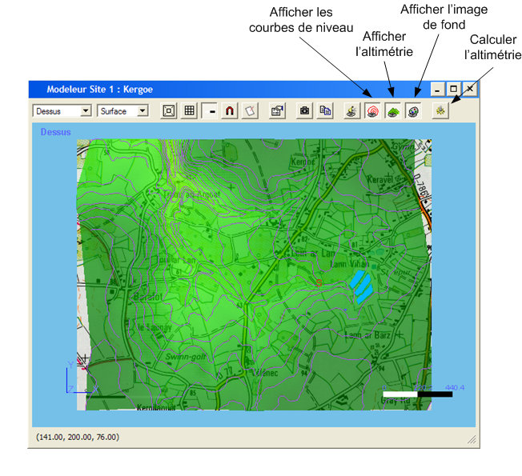

Ce modeleur permet de créer ou de modifier les éléments de topographie ou d'infrastructure composant un site. Il permet aussi de gérer les éléments de calcul tels que les points de contrôle ou les maillages.
Les barres d'outils suivantes permettent d'accéder aux différentes actions applicables à un site :